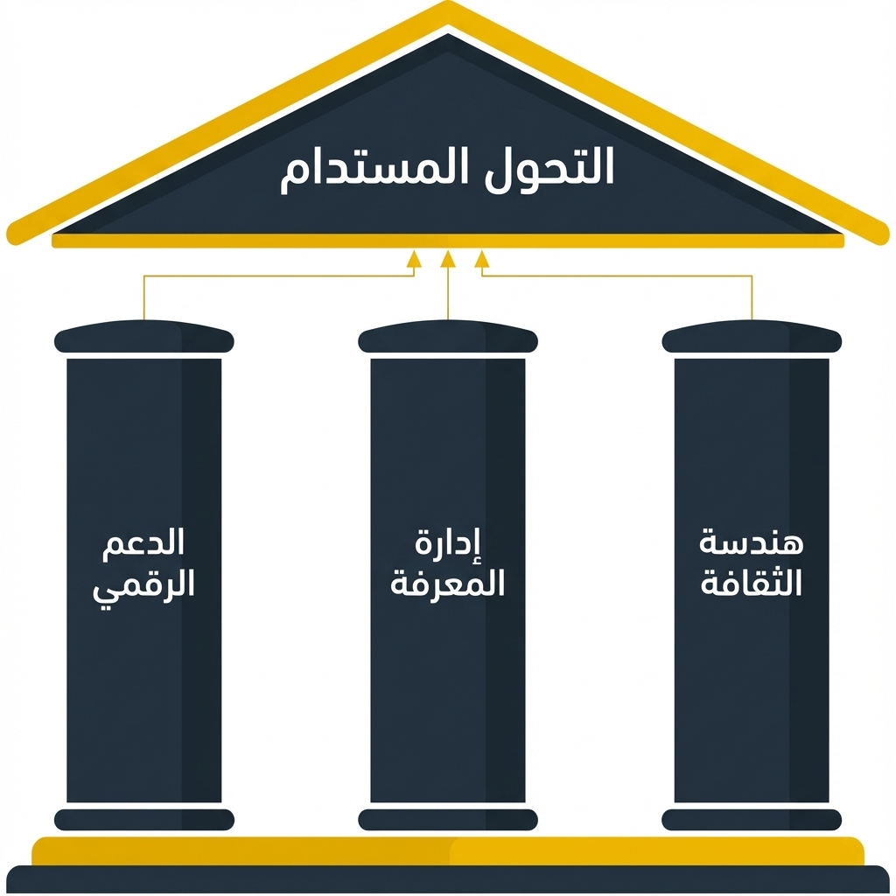

خلال هذا الفصل، قمنا بتفصيل ممارسات الإدارة النشطة المطلوبة لقيادة التحول: الحوكمة لاتخاذ القرارات، والتسليم لتنفيذ العمل، وهيكل التغيير لضمان التبني البشري. ومع ذلك، لكي يكون التحول مستدامًا حقًا، يجب دعم هذه الممارسات بطبقة تأسيسية من القدرات الدائمة. هذه هي الممكّنات.
الممكّنات هي الأدوات والأنظمة والمعايير الثقافية التي تجعل طريقة العمل الجديدة ممكنة وفعالة ودائمة. إهمالها هو خطأ شائع؛ حيث يخلق تحولًا يعتمد بالكامل على الجهود البطولية لقلة من الأفراد ويكون عرضة لخطر كبير للعودة إلى الطرق القديمة بمجرد انتهاء الدفعة الأولية.

الشكل 1: الأساس - الدعم الرقمي والمعرفة والثقافة
الممكّنات الثلاثة الأساسية للتحول
يعتمد التحول الناجح على ثلاث فئات أساسية من الممكّنات، والتي يجب تنميتها بشكل متعمد.
الدعم الرقمي: أدوات التعقيد
لا يمكن تشغيل تحول معقد باستخدام جداول البيانات والعروض التقديمية. يتطلب الحجم الهائل للبيانات المترابطة مجموعة من الأدوات الرقمية المتكاملة. هذا هو الأساس التقني الذي يتضمن منصات لإدارة المحفظة الاستراتيجية (SPM)، ونمذجة العمليات، والعمل التعاوني. التعبير الأسمى للدعم الرقمي هو التوأم الرقمي نفسه - نموذج البيانات المتكامل الذي يوفر مصدرًا وحيدًا للحقيقة للتحول بأكملها.
من بناء القدرات إلى إدارة المعرفة المؤسسية
يمثل هذا تحولًا حاسمًا في العقلية. يركز النهج التقليدي على "بناء القدرات" - تدريب الأفراد والأمل في أن يطبقوا مهاراتهم الجديدة. يحمل هذا النموذج خطرًا كبيرًا: عندما يغادر الموظفون المدربون، تغادر معرفتهم واستثمار المنظمة معهم.
النموذج الجديد هو إدارة المعرفة المؤسسية. يتحول التركيز من الفرد إلى النظام. لا يتم اكتساب المعرفة من قبل الأفراد فحسب؛ بل يتم التقاطها بشكل منهجي، وبشكل أكثر أهمية، دمجها مرة أخرى في نموذج تشغيل المنظمة.
على سبيل المثال، يتم استخدام رؤية من دورة تدريبية لتحديث الإجراء الرسمي لعملية L3 محددة داخل التوأم الرقمي. في المرة القادمة التي ينفذ فيها أي موظف تلك العملية، يتم تقديم النسخة المحسنة له تلقائيًا. لقد أدى تعلم الفرد إلى ترقية نظام المؤسسة بشكل دائم، مما يجعل المنظمة بأكملها أكثر ذكاءً ويخفف من مخاطر استنزاف المعرفة.
الثقافة كمغناطيس للمواهب ومخفف للمخاطر
هذا تحول أساسي آخر، حيث ننتقل من "إدارة المواهب" التفاعلية إلى هندسة الثقافة الاستباقية. ترى النظرة التقليدية الموهبة كمورد يجب الحصول عليه من خلال التوظيف والبحث عن الكفاءات والإحالات - غالبًا في اندفاع تفاعلي لسد الثغرات.
النهج الأكثر قوة واستدامة هو هندسة ثقافة تجذب وتحتفظ بأفضل المواهب بشكل طبيعي. مبادئ الشفافية والمساءلة المستندة إلى البيانات والملكية الواضحة، والتي تعد جوهرية لهذا الإطار بأكمله، تخلق بيئة يزدهر فيها أصحاب الأداء العالي. تصبح هذه الثقافة أصلًا استراتيجيًا، ومغناطيسًا للمواهب يقلل من خروج الموظفين.
عند تأطيرها بهذه الطريقة، تكون الثقافة أداة قوية لإدارة المخاطر. إنها تخفف بشكل مباشر أحد الأسباب الأكثر شيوعًا لفشل التحول: تأخيرات التسليم الناجمة عن نقص الفرق الماهرة ومنحنيات التعلم الطويلة التي تصاحب ارتفاع معدل دوران الموظفين.
الممكّنات كتضباط حاسم لإدارة المخاطر
الفشل في بناء هذه الممكّنات يقدم خطر استدامة حرجًا.
بدون الدعم الرقمي، سينهار التحول في النهاية تحت وطأة وزنه وتعقيده.
بدون إدارة المعرفة، ستعاني المنظمة من "فقدان الذاكرة المؤسسي".
بدون ثقافة الجذب، ستكون المنظمة عرضة لمخاطر مستمرة تتعلق بالمواهب والتسليم.
النقاط الرئيسية
يعتمد نجاح التحول على المدى الطويل على الممكّنات التأسيسية التي تدعمه.
الممكّنات الثلاثة الأساسية هي الدعم الرقمي (الأدوات)، وإدارة المعرفة المؤسسية (دمج التعلم في النظام)، والثقافة (كأداة لجذب المواهب وتقليل المخاطر).
الاستثمار في هذه الممكّنات هو نشاط حاسم لإدارة المخاطر يضمن أن يكون التحول مستدامًا وقابلاً للتوسع ودائمًا.